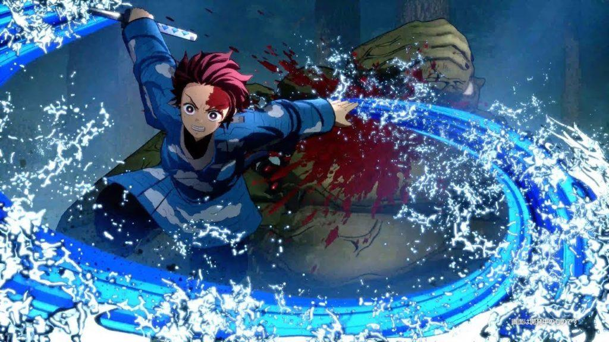

Jujustu kaisen

Jujutsu Kaisen é um anime que adapta o mangá criado (escrito e ilustrado) por Gege Akutami, que também ganhará um longa em breve, chamado Jujutsu Kaisen 0. O anime é produzido pelo estúdio MAPPA sob a direção de Sunghoo Park, a série animada foi lançada em outubro de 2020. Mesmo contando apenas com uma temporada lançada até o momento, o sucesso é inegável e isso alavancou as vendas do mangá, que já possui mais de 45 milhões de cópias em circulação.
Demon Slayer

Em Kimetsu no Yaiba, Tanjiro, um bondoso jovem que ganha a vida vendendo carvão descobre que sua família foi massacrada por um demônio. E, para piorar, Nezuko, sua irmã mais nova e única sobrevivente, também acabou transformada em um demônio. Arrasado com essa sombria realidade, Tanjiro decide se tornar um matador de demônios para fazer sua irmã voltar a ser humana e para destruir o demônio que matou seus entes queridos.